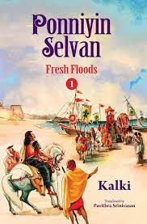

A. Paramedical courses are the courses that support medical work but do not require a fully qualified doctor such as first aid, physiotherapy, X-Ray processing.
This is a veryveryveryveryveryveryveryveryveryveryveryveryveryveryveryveryveryverylongwordthatwillbreakatspecificplaceswhenthebrowserwindowisresized.This is a veryveryveryveryveryveryveryveryveryveryveryveryveryveryveryveryveryverylongwordthatwillbreakatspecificplaceswhenthebrowserwindowisresized.
area
article
Melting plot
Climate change is diminishing Arctic sea ice at rate unseen for some 1,000 years.
aside
Nature
Nature is essential to our lives – from the food on our plates to the clothes we wear, from medicines to mental health benefits.
audio
b tag bold
It’s easy to think Nature will always be with us.
basefont font size
But even in my lifetime, birds like starlings and house sparrows have declined so much they’re now listed as endangered.
bdi bi-directional isolation tag
User hrefs : 60 points
User jdoe : 80 points
User إيان : 90 points
bdo bi-diractional override tag
text left to right
In fact, nature is faring worse in the UK than in most other countries.
In fact, nature is faring worse in the UK than in most other countries.
big font size
In fact, nature is faring worse in the UK than in most other countries.
blockquote
The latest State of Nature report shows that over half our wild species – plants, insects, birds, mammals – are in decline.Overlooking the importance of nature, as we go about our busy lives, makes it easier for it to disappear right in front of our eyes.
body
defines the documents of the body
break
Perhaps you don't have the time to notice
button
click the button
caption
Monthly savings
Month
Savings
January
100
February
150
center
Seven out of 10 people admit they’re losing touch with nature. And more than a third of parents admit they could not teach their own children about British wildlife.
pressures of daily life mean we’re increasingly detached from nature even though nature in many forms is there for us
cite
defines title of work

ponniyin selvan by kalki.
code
defines a piece of computer code. default monospace font.
Even watching wildlife programmes online or on the TV costs — but it’s still no substitute for experiencing nature direct
col col group
Subject
Marks
Tamil
90
English
95
Maths
95
data tag
Cherry Tomato Beef Tomato Snack Tomato
summary
What are 3 advantages of mountains
the higher ranges of mountain helps in physical health.
they provide unique habbitation and support biodiversity.
it helps in prevent with speed of wind.
promote tourism also.
Source of fresh water.
War strategies.
dl description list, dt description tarm tag,dd description details tag
Coffee
Black hot drink
Milk
White cold drink
del
Earth seems to fill the sky in this image taken by the crew of Apollo 17 in 1972
dfn definition tag
IPS full form Indian police Service
dialog
Earth, our home planet, is a world unlike any other. The third planet from the sun, Earth is the only place in the known universe confirmed to host life. div
Essay on Earth
The rocks make up the earth that has been around for billions of years. Similarly, water also makes up the earth. In fact, water covers 70% of the surface. It includes the oceans that you see, the rivers, the sea and more.
em emphasized text
In fact, water covers 70% of the surface. It includes the oceans that you see, the rivers, the sea and more.
base tag
Dialog
embed
fieldset legend form input label
figure figcaption
img 1 flower
font font size
This is another paragraph
footer
frame
frameset
heading
Nature is important
Nature is important
Nature is important
Nature is important
Nature is important
Nature is important
head
html head
header
nav links logo
poniyin Selvan is widely considered by many to be the greatest novel ever written in Tamil literature
hr tag
html
root of html
i tag
Plants grown organically are found to contain a higher level of vital antioxidant vitamins than non-organic plants.
iframe
VIDEO
img tag
ins
Many people are allergic to chemicals commonly found in non-organic beauty products that can cause redness, irritation and breakouts.
keybord input
ctrl +
ol list
apple
orange
banana
papaya
perikai
link
relationship between a document and an external resource
main
map
mark
Nature, in the broadest sense, is the physical world or universe
meter
Disk usage a:
navigation link
home
about
services
contact
No script
Your browser does not support JavaScript!
object
option optiongroup
html
css
javascript
csc
engineering
output
defines the result of a calculation
paragraph
Nature can refer to the phenomena of the physical world, and also to life in general.
param
picture
view port size